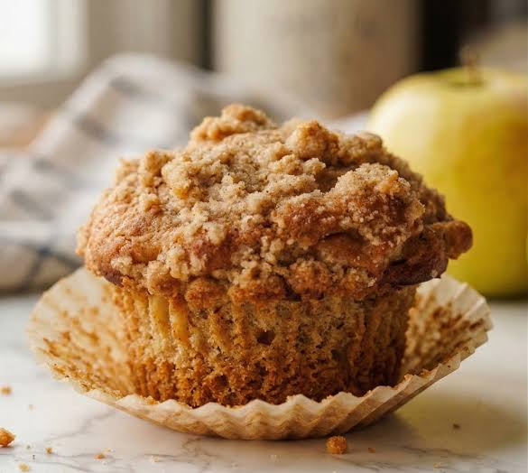

Muffins de manzana y canela

Los muffins de manzana y canela son una excelente combinación de sabores dulces y especiados. La manzana aporta humedad y suavidad, mientras que la canela añade un aroma característico que convierte esta receta en una opción ideal para cualquier época del año. Además, son muy fáciles de preparar y pueden conservarse durante varios días sin perder su textura.